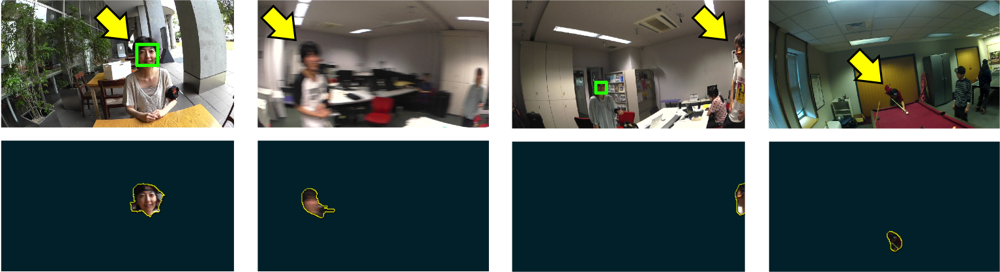

Yonetani, Kitani and Sato: "Ego-Surfing First Person Videos", CVPR2015

We envision a future time when wearable cameras (e.g., small cameras in glasses or pinned on a shirt collar) are worn by the masses and record first-person point-of-view (POV) videos of everyday life. While these cameras can enable new assistive technologies and novel research challenges, they also raise serious privacy concerns. For example, first-person videos passively recorded by wearable cameras will necessarily include anyone who comes into the view of a camera -- with or without consent. Motivated by these benefits and risks, we develop a self-search technique tailored to first-person POV videos. The key observation of our work is that the egocentric head motion of a target person (i.e., the self) is observed both in the POV video of the target and observer. The motion correlation between the target person's video and the observer's video can then be used to uniquely identify instances of the self. We incorporate this feature into our proposed approach that computes the motion correlation over supervoxel hierarchies to localize target instances in observer videos. Our proposed approach significantly improves self-search performance over several well-known face detectors and recognizers. Furthermore, we show how our approach can enable several practical applications such as privacy filtering, automated video collection and social group discovery.
Ryo Yonetani, Kris M. Kitani and Yoichi Sato, "Ego-Surfing First Person Videos", CVPR2015. preprint (7.5MB) / extended abstract (1.9MB)
This dataset contains syncrhonized first-person videos of a conversation scene recorded at 60fps for 30sec. The following compressed files include:
View this project on GitHub to test our CorrSearch Software written in Python.